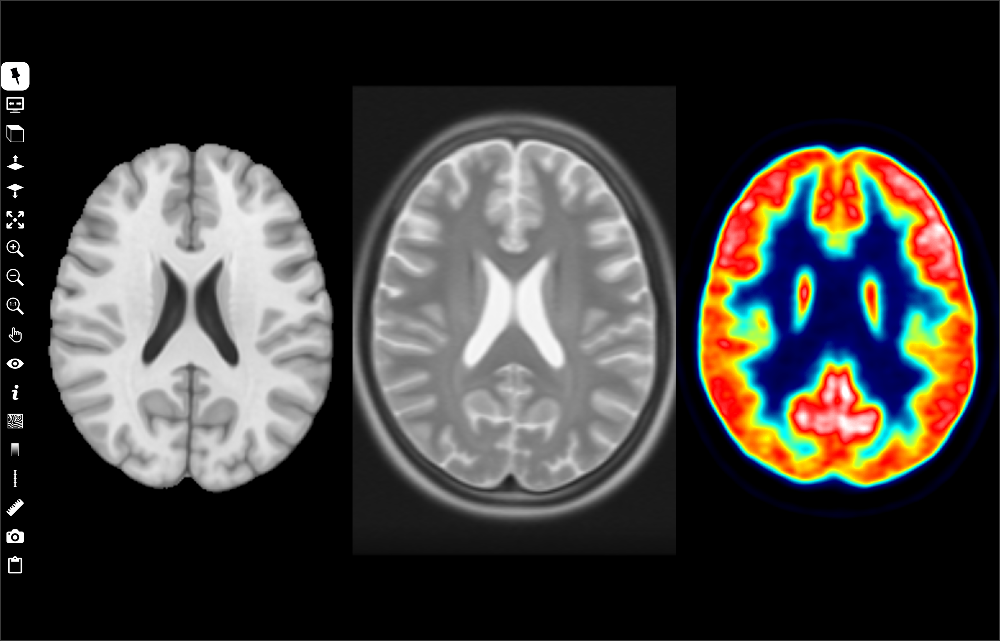

Synchronized view widget
This widget, placed in the central area, displays the same slice of multiple synchronized volumes (reference, and all volumes displayed as overlays in others view widegts) in a grid. This widget can be used to display ROI (ROI). However, it does not display mesh, trajectory/target tools and streamlines (Mesh, Target/Trajectory, Tracking).
Left-click to select the slice in a grid cell. Some controls can be applied only to a selected cell. This cell is outlined in white.
Controls
MouseWheel slices through image,
Up or Left key to display previous slice,
Down or Right key to display next slice,
MouseWheel + CTRL key (CMD key MacOs platform) to change zoom,
Up or Left + CTRL key (CMD key MacOs platform) to zoom out,
Down or Right + CTRL key (CMD key MacOs platform) to zoom in,
Left-click to move cursor position,
Left-click + CTRL key (CMD key MacOs platform) and drag to change zoom,
Left-click + ALT key and drag to move the viewpoint,
Left-click + SHIFT key and drag to change window/level,
Right-click + CTRL Key (CMD key MacOs platform) to show a popup menu.
Icon bar
Synchronized view widget includes a vertical icon bar to the left:

Left-click to select/unselect. When this button is unselected, the icon bar is hidden when the mouse cursor leaves it. The icon bar is displayed when the mouse cursor is moved to the left border of the grid. If this button is selected, the icon bar is always visible.
left-click to select/unselect. Toggle between full-screen and normal display modes. In full-screen mode, the slice view widget is extended to the full screen. Press F11 or ESC key to exit full-screen mode.
Change orientation of slices (A, C, S shortkeys).
Left-click to display previous slice (Up or Left shortkeys or CTRL MouseWheel).
Left-click to display next slice (Down or Right shortkeys or CTRL MouseWheel).

Left-click to select/unselect. Expand the selected cell to the whole widget surface (+ shortkey).
Left-click to to zoom in (CTRL Up shortkey).
Left-click to zoom out (CTRL Down shortkey).

Left-click to apply default zoom (0 shortkey).
{kind=link}
{kind=link}
{kind=link}
{kind=link}
{kind=link}
{kind=link}
{kind=link}
{kind=link}
Left-click to display a menu and choose an action mode:
Move, move the slice viewpoint by pressing the left mouse button and dragging.
Zoom, change the zoom factor by pressing the left mouse button and dragging.
Level/window, change the window thresholds by pressing the left mouse button and dragging.
Cursor follows mouse, in this mode, the cursor position follows the mouse without clicking.
Centered cursor, in this mode, slice viewpoint is moved and centered on the point clicked with the left mouse button.
No action, exit previous action mode.
{kind=link}

Left-click to display a menu and set widget visibility.
cursor (x shortkey), cursor visbility (horizontal and vertical white lines intersect).
Information (i shortkey), information visibility. Various information can be displayed in each corner of the cell (type of information is selected with button).
Orientation labels (l shortkey), orientation labels visibility: L (left), R (right), S (superior), I (inferior), A (anterior), P (posterior).
Orientation marker (m shortkey), orientation marker visibility, 3D marker can be displayed at bottom-right (type of marker is selected with button).
ROI, ROI visibility.
Colorbar (b shortkey), colorbar visibility (select colorbar position with
 button).
button).Ruler (r shortkey), ruler visibility (select colorbar position with button).
Tooltip (t shortkey), tooltip visibility.
{kind=link}
{kind=link}
Left-click to display a menu and select the type of information displayed, if
information is checked.Identity, patient identity (firstname, lastname, birthdate) at top-left corner.
Image attributes, image attributes (ID, matrix size, field-of-view, voxel spacing, datatype) at top-right corner.
Acquisition attributes, acquisition attributes (orientation, modality, sequence, date of scan) at bottom-left.
World coordinate, world coordinates in mm at mouse position.
Leksell coordinate, Leksell space coordinates at mouse position (if fiducial markers of a Leksell stereotaxic frame are first detected).
AC-PC, relative AC-PC world coordinates in mm at mouse position (if anterior and posterior commissures are selected first).
Voxel value, scalar value of voxel at mouse position.
Voxel overlay value, overlay scalar value of voxel at mouse position.
Orientation marker shape, Cube with L-R-S-I-A-P labels on its faces, 3D brain, 3D head, 3D bust, 3D body or 3D axes.

Left-click to display a menu to iso-value lines as overlay.
 to chose line color.
to chose line color. to chose line opacity.
to chose line opacity.Isoline value box to edit one or more iso-value splits using a space character.
Check volume name (reference volume or overlays) used to perform iso-value lines.
Left-click to display a menu and select the colorbar position: left, right, top or bottom border.
Left-click to display a menu and select ruler position: left, right, top or bottom border.

Left-click to display a menu to add an interactive tool.
Distance, used to measure the distance in mm between two points. Left-click in the view widget to position the two endpoints. Left-press and drag to move the endpoints. Right-click on distance label to display popup menu to select color or delete tool.
Orthogonal distances, used to measure two orthogonal distances in mm. Left-click in the view widget to position the four endpoints. Left-press and drag to move the endpoints. Right-click on distance label to display popup menu to select color or delete tool.
Angle, used to measure angle in degrees between two lines. Left-click in the view widget to position the three endpoints. Left-press and drag to move the endpoints. Right-click on angle label to display popup menu to select color or delete tool.
Remove all, remove all tools.

Left-click to display a screenshots management menu:
Save grid capture…, take a screenshot of the slice view.
Save selected view capture, take a screenshot of the selected cell (outlined in white, SPACE shortkey)
Save capture from slice series, take a series of screenshots of each slice, in the current orientation.
Send selected view capture to screenshots preview, take a screenshot of the selected cell and copy it to the screenshot manager.

Left-click to display a menu to take screenshot and copy it to the clipboard.
Copy grid capture to clipboard, take a screenshot of the slice view and copy it to the clipboard.
Copy selected view capture to clipboard, take a screenshot of the selected cell and copy it to the clipboard.